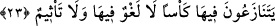

içindir. Yâni onlara bitip tükenmeyen meyveler veririz. Herhangi bir meyveyi
yediklerinde tekrar yerine yenisi gelir. Kişi cennette bir kuşun etini yemek ister, derhal o
et pişmiş olarak insanın önünde hazır bulunur. Başka bir rivâyete göre de kuş kişinin
önüne düşer. O kişi, pişmiş ve dilim dilim olmuş bu kuşun etinden yer, ama bir müddet
sonra kuş ırmağa doğru uçar gider.[47]
23. Orada karşılıklı kadeh tokuştururlar, ama burada (içki yüzünden) ne
saçmalama vardır ne de günaha girme.
“Orada karşılıklı kadeh tokuştururlar.” Bir şeyi nez’ etmek, yayı bağrından tutup
çekmek gibi, o şeyi odağından germektir. Tenâzû ve münâzaa, karşılıklı olarak bir
hususta çekişmektir. Bundan murad da muhâsame ve mücâdele olup buradaki gayesi,
karşılıklı olarak kadehleri vermek ve elden ele dolaştırmaktır. Yâni cennetlikler, oyun
oynayanların sevinç duymaları ve sevginin aşırılığından dolayı coşkuya kapılmaları gibi
cezbeye kapılırlar. Burada bir nevi lezzet söz konusudur. Zira cennette hasımlaşma
türünden bir niza’ tasavvur edilemez. O halde anlam şöyledir: Tenâzû tâbirinden
anlaşıldığı üzere cennettekiler, arkadaşlarıyla, sohbetdaşlarıyla kemâl-i arzu ve iştiyak
ile bir kadeh kapışırlar.
Cennette birbirlerinden alıp verirler, yâni cennet şarabıyla dolu kâseyi hem alır hem
de verirler. Muhabbetle birbirlerine cennet şarabı dolu kadeh sunarlar.
“Ke’s” içinde içecek olan bir kadehtir. Üzerinde yiyecek bulunmayan sofraya “mâide”
denilmediği gibi, içerisinde içecek bulunmayan bardağa da “kadeh” denilmez. Buradaki
“ke’sen”den murad, içindeki şarap olup bu, mahallinin yâni içine konduğu kabın ismiyle
tesmiye olunmuştur.
“Ama burada (içki yüzünden) ne saçmalama vardır.” Yâni o kadehteki şarabı
içtikleri zaman asla güzel sözleri terk edip çirkin söz söylemezler ve ne söylediklerini
karıştırmak gibi bir konumda konuşmazlar. (Halbuki dünyadaki sarhoşlar böyle değildir,
onların durumu tamamen farklıdır.)
İbn Atâ şöyle der: Cennet-i Adn gibi bir yerde (ve tüm cennetlerde) “lağv/boş ve
bâtıl söz” olamaz. Âyette bahsedilen kadehleri dolduran sâkîler, meleklerdir. Onların
içecekleri şeyden murad zikrullah; koklayacakları şeyler Allah tarafından olan selâm-ı
mübâreke-i tayyibe ve oradaki topluluklar da Allah’ın konuklarıdır.
Râğıb da der ki: “Lağv”, kendisine önem ve itibar verilmeyen söz demektir. Herhangi
bir müşâhede ve tefekküre dayanmayan, bu yüzden de önemsiz konumda bulunan serçe
v.b. kuşların sesinin de kendisiyle tesmiye olunduğu bir kelimedir.
“Ne de günaha girme vardır.” Yâni o kadehteki içecekler, fâiline günah kazandıracak
bir şeyi yaptırmazlar. Dâr-ı teklif olan dünyada şarap içip de pişman oldukları görülen